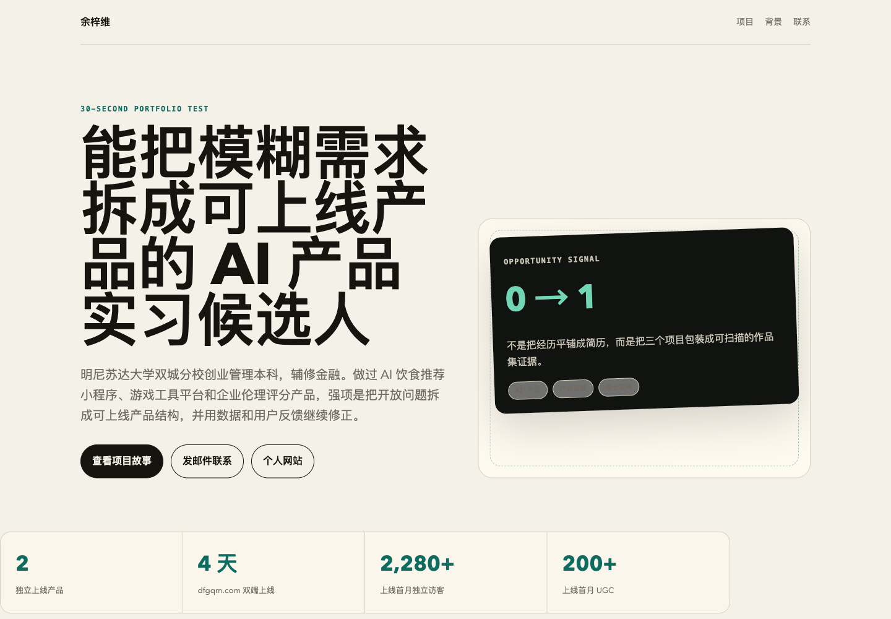
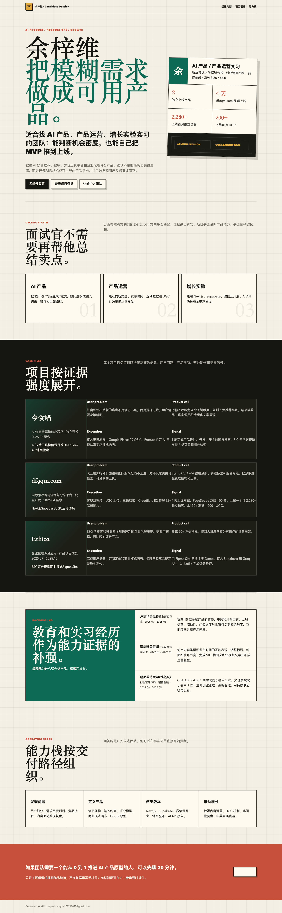
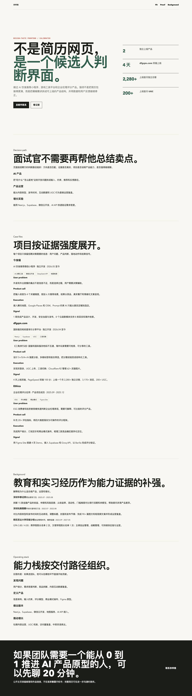
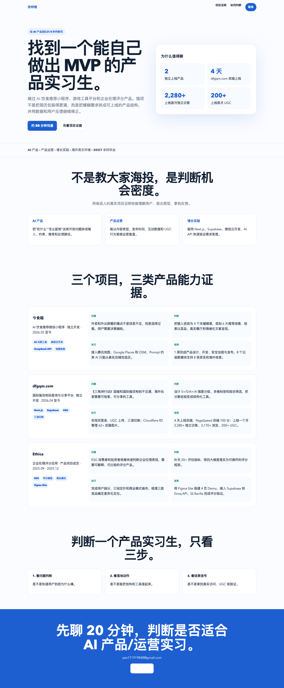
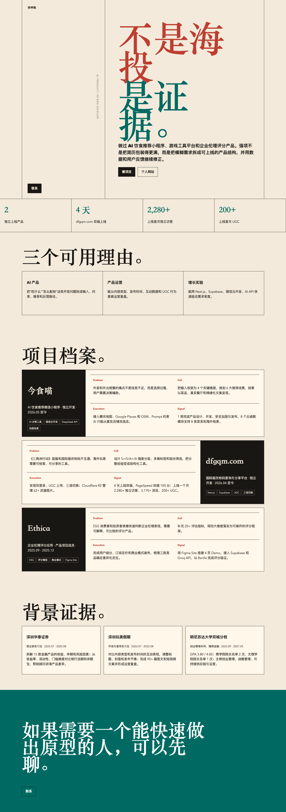
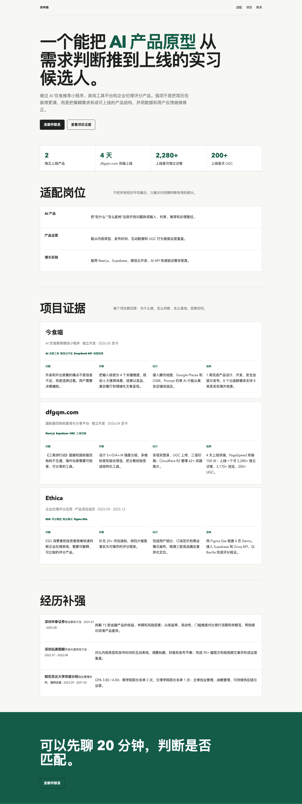
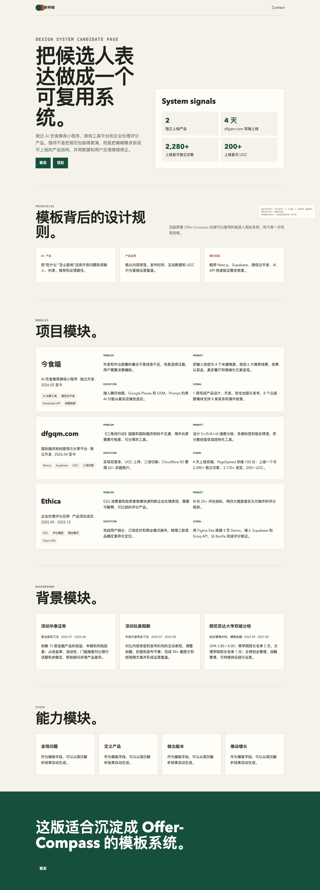
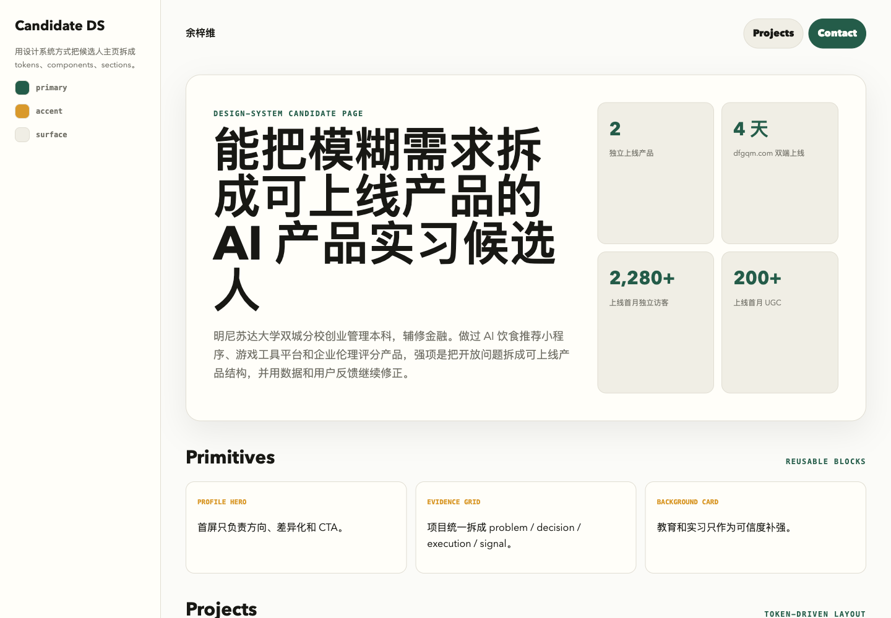
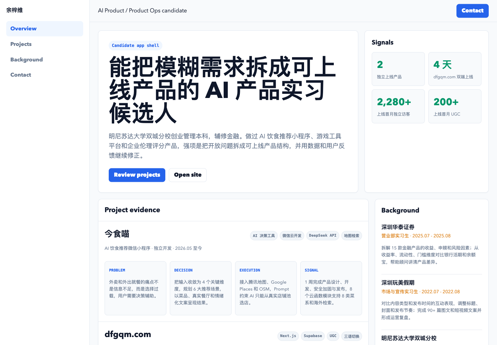
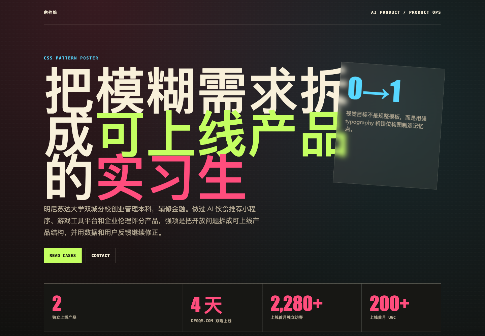

核心结论：简历网站生成器的关键不是“生成一个 HTML”，而是搭一条设计流水线。先判断候选人怎么表达，再选择模板，再用设计系统生成页面，最后做发布前审查。
推荐组合：interactive-portfolio 做叙事，design-consultation 做系统，design-taste-frontend 去 AI 味，tailwind-design-system 固化 token，shadcn-layouts 保证布局正确，claude-page-review 做上线前审查。

一张总表
| Skill | 底层问题 | 核心原理 | 最适合场景 | 最大风险 |
|---|---|---|---|---|
interactive-portfolio | 候选人如何在 30 秒内被理解和记住 | 项目证明大于履历罗列，作品集是转化工具 | 个人网站、作品集、求职主页 | 只讲视觉，不讲真实影响 |
frontend-design | 如何避免普通 AI 模板感 | 先选强视觉方向，再让字体、颜色、空间、动效服务这个方向 | 创意页、品牌页、高识别度页面 | 视觉强但业务叙事弱 |
design-taste-frontend | 如何把 AI 页面校准成高级前端 | 用约束修正常见 LLM UI 偏差 | 页面美化、审美升级、反模板化 | 不能自动解决产品定位 |
landing-page-design | 用户为什么要继续行动 | 首屏价值、证据、CTA、转化路径 | 获客页、服务页、咨询预约页 | 个人主页容易变得太销售 |
design-shotgun | 方向没定时如何探索 | 一次生成多个真正不同的方向 | 早期视觉探索、用户不满意时重开方向 | 探索稿不能直接上线 |
claude-page-review | 发布前页面是否可信、清晰、不过界 | Codex 控流程，Claude 做页面二次审查 | 公共页面、Hero、文案、品牌页上线前 | 如果 brief 不清，审查会泛化 |
design-consultation | 如何从单页变成体系 | 先定义设计系统，再落页面 | 模板库、品牌系统、多页面产品 | 可能不如创意型 Skill 惊艳 |
tailwind-design-system | 如何让设计可复用 | token 是单一事实源，组件包住自由度 | 产品工程、模板系统、长期维护 | 前期约束多，速度慢一点 |
shadcn-layouts | 为什么页面会滚动错、撑破、塌陷 | CSS 布局来自约束链 | App shell、仪表盘、滚动布局 | 它解决正确性，不解决审美 |
frontend-css-patterns | 如何形成独特 CSS 视觉语言 | 字体、配色、动效、空间、纹理是可复用模式 | 静态页、海报页、视觉增强 | 容易堆效果，压过内容 |
1. interactive-portfolio：把简历变成机会转化页

底层判断：作品集不是简历的网页版本，而是一次 30 秒的机会转化。
它关心访问者能不能快速回答四个问题：你是谁，你做什么，你最强的证明是什么，我如何联系你。
所以它会把简历从时间顺序改成证明顺序。最有说服力的项目、真实数据、上线结果、用户反馈，要先出现。项目不是经历列表，而是能力证据。
对 Offer-Compass 来说，这个 Skill 适合放在第一步：抽取候选人定位、项目证明、可展示成果。它解决的是“这个人应该如何被介绍”。
2. frontend-design：先决定视觉立场

底层原则：一个页面必须先有明确的审美立场，否则再多 CSS 也只是装饰。
它反对默认字体、默认卡片、默认紫蓝渐变、默认三列布局。它会先问页面的语气是什么，第一印象是什么，是否有一个能被记住的视觉锚点。
这类 Skill 擅长把页面从“可用”拉到“有识别度”。但视觉方向强，不等于业务表达对。如果候选人定位不清，它可能会把错误的故事讲得很好看。
3. design-taste-frontend：把审美变成工程约束

底层原理：LLM 生成 UI 有统计偏差，所以必须用明确约束去抵消。
它会修正常见坏习惯：居中大标题、三列卡片、紫蓝渐变、廉价字体、卡片滥用、只有成功态、手机端高度和滚动崩坏。
它像高级前端审美守门员。不是帮你想商业故事，而是确保页面不像 AI 套壳，也不会为了视觉兴奋牺牲工程稳定性。
4. landing-page-design：所有东西都服务转化

底层逻辑：页面不是用来欣赏的，是用来推动行动的。
它判断首屏是否合格的标准很直接：5 秒内，用户是否知道这个东西能帮他获得什么结果。Headline、Subheadline、Hero image、CTA、社会证明都围绕这个目标服务。
它适合 Offer-Compass 的服务获客页、上传简历引导页、预约咨询页。但直接套到候选人个人主页上，容易太像销售页。
5. design-shotgun：先扩大搜索空间

底层原理：早期设计最容易陷入局部最优。一直改当前版本，只会得到一个更精致的错误方向。
它适合一次拉开多个真正不同的方向。不是换按钮颜色，而是字体、布局、视觉密度、信息顺序、情绪都不同。
它可以成为简历站模板探索器，但探索稿通常需要收敛。好看不等于可发布。
6. claude-page-review：发布前的第二设计师

核心原则：Codex 控流程，Claude 做页面二次审查。
它不是把问题模糊地丢给另一个模型，而是先写 bounded brief：页面、目标、问题、不能改的事实、不能暴露的信息、允许改的文件。
它适合上线前检查：首屏是否清楚，文案是否像给用户看的，视觉层级是否可信，是否有虚假证明，是否暴露隐私或内部信息。
7. design-consultation：从单页进入设计系统

底层思想：设计不是一个页面，而是一套可复用的选择。
它会先定义产品气质、字体系统、色彩系统、间距节奏、模块规则，以及哪些地方稳定、哪些地方可以有记忆点。
它最适合 Offer-Compass 的模板库建设。我们的目标不是只帮一个候选人生成页面，而是让成千上万份简历都能生成像样但不雷同的站点。
8. tailwind-design-system：把审美落到 token

底层原理：好看的页面不能只存在于一次生成里，它必须变成 token、组件和约束。
它关心颜色语义命名、前景/背景成对、dark mode token、组件是否使用设计变量、shadcn/ui 是否被包成受控 primitive。
它的价值是把“设计判断”变成“工程契约”。对自动生成个人网站来说，这比一次性视觉效果更重要。
9. shadcn-layouts：解决布局正确性

底层原理：CSS 布局来自约束链。高度向下传，宽度向上撑。
很多 AI 页面不是语法错，而是布局心智模型错。比如 h-full 不知道继承谁的高度，flex 子元素没有 min-h-0，ScrollArea 没有明确高度。
它不负责审美，但负责页面不会坏。尤其适合编辑器、预览器、Dashboard、App shell。
10. frontend-css-patterns：把视觉语言拆成 CSS 模式

底层原则：视觉不是“加点样式”，而是由可组合的 CSS 模式构成。
它关注字体搭配、有限配色、首屏加载动效、错位和重叠空间、纹理、渐变、发光、遮罩、边框等视觉细节。
tailwind-design-system 解决一致性，frontend-css-patterns 解决表达力。风险是效果堆叠，视觉细节必须服务候选人的核心信号。
对 Offer-Compass 的推荐工作流
1. 简历解析只是素材池
先抽取候选人定位、最强项目、真实成果数字、目标岗位、公开链接和隐私字段。不要急着生成页面。
2. 重组叙事
用 interactive-portfolio 把时间顺序改成证明顺序。首屏讲身份和差异，项目区讲最强证据。
3. 匹配模板家族
产品/运营、研发/算法、设计/内容、金融/咨询、创业/项目型候选人，不应该套同一个模板。
4. 固化设计系统
用 tailwind-design-system 管理颜色、字体、间距、组件和移动端规则，让模板能批量生成。
5. 保证布局正确
用 shadcn-layouts 处理高度链、滚动容器、flex shrink、grid 父子关系和移动端回退。
6. 发布前审查
用 design-taste-frontend 去 AI 味，再用 claude-page-review 检查可信度、隐私、夸大和首屏清晰度。
最后
我们真正要沉淀的不是“调用哪个 Skill”，而是自己的 resume-site-template-designer：先识别候选人类型，再选择叙事结构，再匹配模板家族，再用 token 生成页面，再用浏览器截图做 QA，最后做发布前审查。
这才是从“好看页面”走向“可规模化产品能力”的关键。